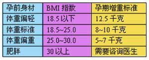

准妈妈孕期体重管理
准妈妈怀孕期间究竟要增加多少公斤，才能提供宝宝足够的营养，又不致让自己长出不需要的赘肉呢？怀孕期间将体重维持在标准范围内，不仅能帮助生产顺利，减少生产的伤害，预防妊娠纹的产生，还可以避免产后肥胖等问题。
孕期体重的几个常见误区
孕期准妈妈的体重直接关系到整个分娩过程的顺利与否，以及分娩后妈妈和宝宝的健康。但是在妊娠期间，准妈妈们对于体重问题还是存在着不少的误区：
没怀孕的时候注意节食，怀孕了之后可以毫无节制的大吃大喝。
怀孕了饭量当然要增加，因为“一个人要吃两个人的”。
为了保胎，孕妇就要“多吃少动”。
孕期吃的越多、体重越重越好，才能生个健康的“大胖宝宝”。
是不是您在怀孕的过程中也不知不觉误入了这些误区呢？其实孕期的体重增长要控制在标准范围之内，才能保证宝宝的健康，同时使妈妈在分娩的时候更加顺利，也更利于产后恢复。
孕期增重多少公斤合适？
判断孕期增重标准

认识BMI(Body Mass Index)指数
据准妈妈自身体型，胖瘦的不同，孕期体重共增加的标准范围也不一样。国际上常试用的体重指数BMI，是衡量是否肥胖的重要指标。准妈妈可以根据孕前体重，按以下公式计算自己的BMI指数，再确定孕期的增重标准。
BMI=体重(千克)/身高(米)2
例如，准妈妈孕前体重为55千克，身高1.6米，BMI指数为50/(1.6*1.6)=21.48。
孕期体重变化规律和孕妇体重过轻引起的问题
孕妇体重过轻引起的问题
孕妇体重过轻易生出低体重儿。体重低于2500克的新生儿称为低体重儿。这样的新生儿皮下脂肪少，保温能力差，呼吸机能和代谢机能都比较弱，特别容易感染疾病，死亡率比体重正常的新生儿要高得多,智力发展也会受到一定的影响。胎儿营养不足，出生后体弱多病，增加了养育的困难。
孕期体重变化规律
整个怀孕期间，孕妇增重最好在11公斤左右。
正常孕妇怀孕头3个月，体重每月增加0.5公斤左右。
此后，体重每月增加不宜超过2公斤，而且一周不要超过0.5公斤
妊娠7～8月时，体重增长速度开始逐渐放慢。
孕期体重超标的危害
影响妈妈健康 增加难产风险威胁宝宝健康
对孕妇而言，超重的“准妈妈”患上妊娠并发症几率比正常“准妈妈”高得多，这些并发症包括妊娠高血压疾病、妊娠期糖尿病、血栓形成、产后抑郁症等。
超重“准妈妈”由于分娩巨大儿几率增加，导致难产使用产钳助产和剖宫产率增加，加重了产妇的损伤，且易导致产后出血及感染。因为身体脂肪蓄积，产道阻力增大，自然分娩时造成组织弹性减弱，因此容易出现宫缩乏力、大出血及新生儿窒息等。 肥胖孕妇选择剖宫产，由于腹壁脂肪充盈，手术视野往往暴露不充分、胎儿取出困难.
对胎儿来说，因为难产，胎儿产伤发病率增高，这些疾病包括颅内出血、锁骨骨折、臂丛神经损伤及麻痹，甚至新生儿窒息死亡等。这样的胎儿，成年后 Ⅱ型糖尿病、高血脂症、心血管疾病的发病率也明显高于正常人群。
虽然大多数肥胖妈妈的胎儿体重过大，但在临床上还可见小部分过度肥胖的“准妈妈”孕期发生 胎儿宫内生长受限、分娩出低体重儿，这可能与脂肪沉积影响胎盘功能有关。
通过饮食控制孕期体重
孕期应该怎么吃？
尽量少吃零食和夜宵。大家都知道，吃零食是导致肥胖的重要因素之一。其实夜宵也是保持体重的大敌，特别是就寝前两个小时左右吃夜宵，缺乏消耗，脂肪很容易在体内囤积，使人发胖。
多吃一些绿色蔬菜。蔬菜本身不但含有丰富的维生素，而且还有助于体内钙、铁、纤维素的吸收，以防止便秘。少吃油腻食物，多吃富含蛋白、维生素的食物。
写饮食日记：记录每天早、中、晚餐饮食内容，反省自己是否吃了不该吃的东西。
每天称体重：可不断提醒自己应该注意饮食内容，以免吃进过量食物。
饮食过量时隔天节食：有时不小心贪吃，也不必过于自责，建议不妨减少第二天的饮食量，而且以吃清淡食物为宜。
孕期应该吃什么？
妊娠早期(怀孕前三个月)由于胎儿生长速度较慢，母体的相关组织增长变化也不明显，所需营养较为有限，不必强求补充大量的营养，但这个阶段是胎儿生长发育最重要的时期，某种营养素的缺乏或过量，会引起胎儿早期发育障碍和畸形。呕吐不可禁食，吐后仍要吃一些易消化的食物。
孕中期(怀孕中三个月)胎儿生长发育迅速，母体也发生了极大变化，要增加热量，给予足够的蛋白质，增加动物性食品、植物油、维生素及微量元素的摄入。孕中期每餐摄取量可因孕妇食欲增加而有所增加，但随着妊娠的进展，子宫不断增大，胃部会受到挤压，使得孕妇餐后出现饱胀感。为此，可增加每日的餐次， 但每次的食量要适度。
孕晚期(怀孕末3个月)这段时间是胎儿生长最迅速、胎体内储存营养素最多、孕妇代谢和组织增长最高峰，营养较前两期也更为重要。孕晚期胎儿的不断增大，子宫压迫胃部增加，由于激素作用于消化系统，引起胃排空时间延长，孕妇往往吃较少食物就有饱胀感，应以少食多餐为原则。
大多数准妈妈都是健康的。一个孕前身体健康、营养均衡的女性，只需在医生的指导下适当补充孕期所需的食物和营养，保证优质蛋白、维生素、矿物质、微量元素的摄入即可，完全不必刻意地大补特补。对于身体瘦弱、体重少于正常值的孕妇，怀孕期间应尽量多吃，增加食物摄入量，这样才能使身体有足够的体能和热量，负担得起孕育健康宝宝的使命。对于生多胞胎的准妈妈应尽量多吃，满足每个孩子的营养需求。
通过运动控制孕期体重
孕妇适宜进行的运动
散步：傍晚空气质量比较好，氧分含量高，母体血液中的氧分含量高，会直接传到胎儿体内，促进各种器官健康发育。散步还能增加孕妇盆腔的收缩功能，防止胎儿胎位不正，增加孕妇腹肌的弹性，让孕妇分娩时更顺利。
Kegel练习：这是一种无论何时何地都可以进行。它的主要运动方式是通过自主地收缩骨盆底肌肉(群)而完成的。它可以加强子宫下部支撑肌群、阴道括约肌、尿道括约肌的力量，孕期、产后每天做2至3组，每组10至15次的Kegel练习可保证女性的这些肌肉能很好地完成怀孕、生产的任务，减少分娩时会阴撕裂的机会， 促进产后阴道括约肌尽快恢复弹性。
水中运动，包括游泳、水中健身操等。水中运动作为有氧运动中特殊的一种，对孕妇有极大的益处。水的浮力可以帮助孕妇支撑比怀孕前多出的10至13公斤体重，水的阻力可以减少逐渐松弛的关节的损伤机会，水比空气良好的传导能力是孕妇不必担心体温过度升高。
瑜伽、普拉提等其他运动：力量训练、瑜珈、普拉提等。这些运动有一定的难度和小量的危险性。有经常进行这些锻炼的女性在怀孕后多加小心的基 础上可继续类似的运动，有一些动作明显不适于孕妇的，应不再做，如屏气举重，过分拉伸韧带，肩肘倒立等等。最好应请教此类运动的专业人士，设计一个有效而 且安全的训练计划。
孕妇保持体重的注意事项
注意：运动应在有保护的情况下科学进行。剧烈程度和运动方式要听取专业人士的指导意见，不可过于剧烈，以免对孕妇和胎儿造成不必要伤害，增加妊娠风险。
孕期拒绝减肥药：准妈妈怀孕期间使用药物减肥是非常危险的行为，因为减肥药物或对大脑的饮食中枢造成一定抑制作用，或通过一些缓泻剂使多余的水分和脂肪排出体外，可能造成营养不足，导致胎儿营养不良，甚至可能对胎儿有副作用，造成胎儿的先天疾病。
老公帮忙把关：请老公每天确认准妈妈的体重数字，为老婆的体重严格把关，共同完成好孕期体重控制的工作。